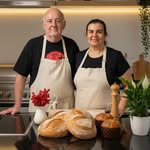

Pães de fermentação natural, feitos à mão em Londrina
Nascemos em Minas Gerais, onde a cozinha sempre foi parte da nossa vida. Começamos vendendo cachorro-quente na praça — aprendendo a servir bem, ouvir as pessoas e fazer com cuidado.
Com o desejo de crescer, investimos em um curso de gastronomia e nos apaixonamos pelos pães de fermentação natural. Anos de prática nos ensinaram a respeitar cada etapa, valorizar bons ingredientes e nunca ter pressa.
O Ivan se dedicou também à charcutaria — e foi assim que os defumados artesanais entraram pra família.
Hoje, queremos compartilhar tudo isso. Cada pão e cada lanche que sai daqui é feito com dedicação e amor — como se fosse pra nossa própria família.
— Hildinha & Ivan, Londrina